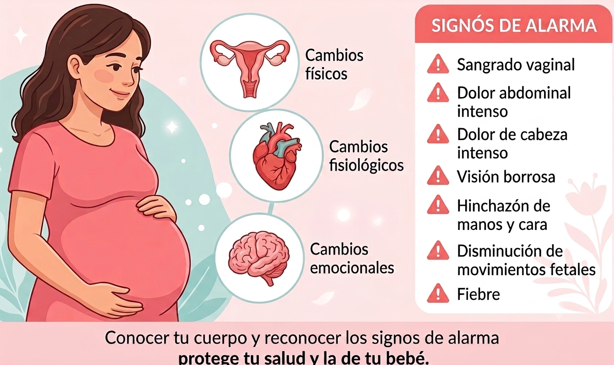

Sesión 1
Cambios durante el embarazo y signos de alarma
En esta sesión se desarrolla la enseñanza teórico-práctica sobre los cambios físicos y emocionales del embarazo, los beneficios de la psicoprofilaxis obstétrica y el reconocimiento de los signos de alarma. Además, se realizan ejercicios de gimnasia obstétrica (calentamiento, movilidad pélvica, estiramientos y corrección postural), técnicas de respiración profunda y actividades de relajación y visualización para fortalecer el bienestar materno-fetal (2).
